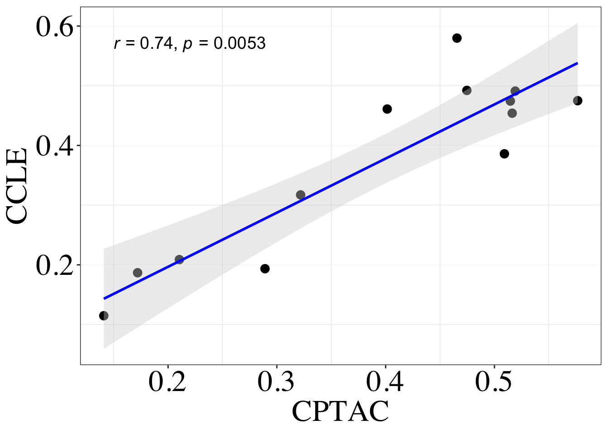
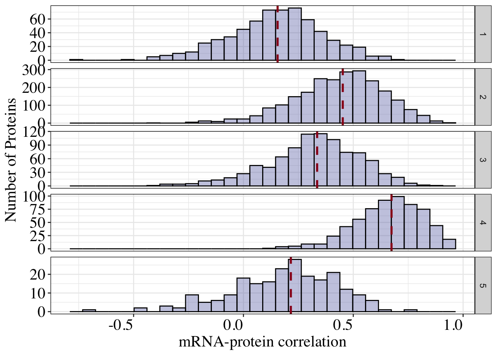
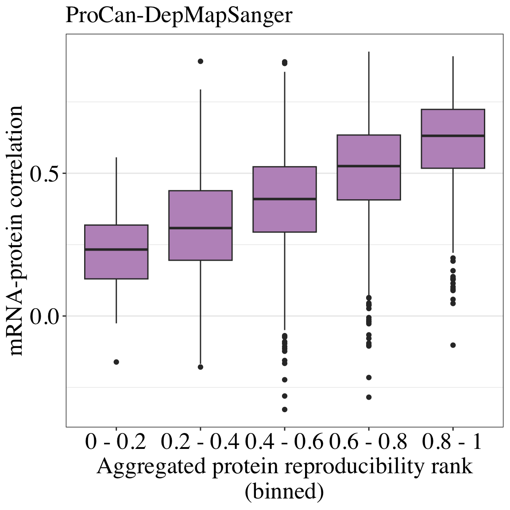
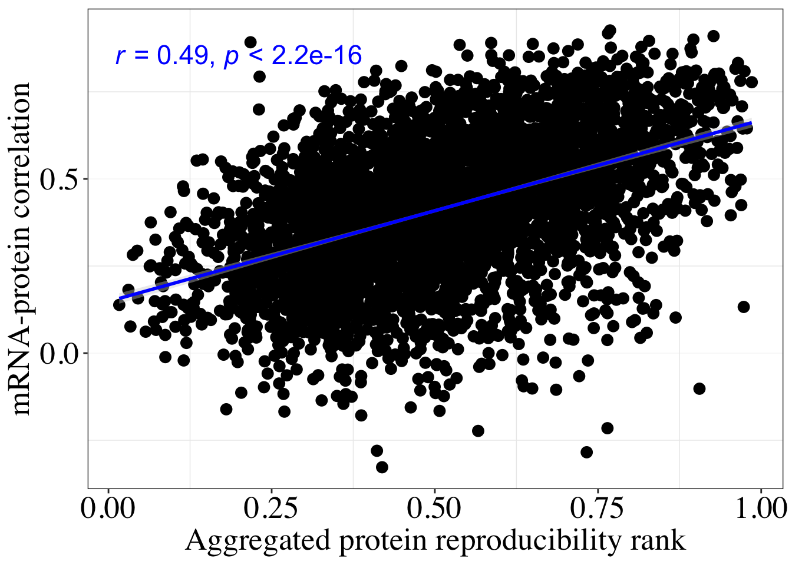
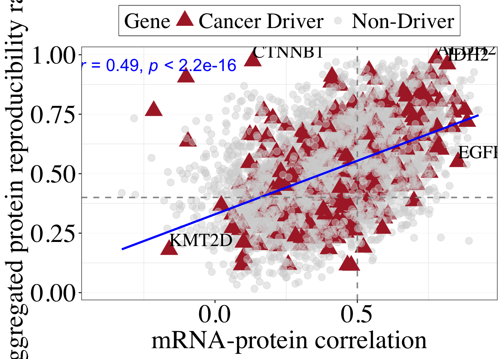
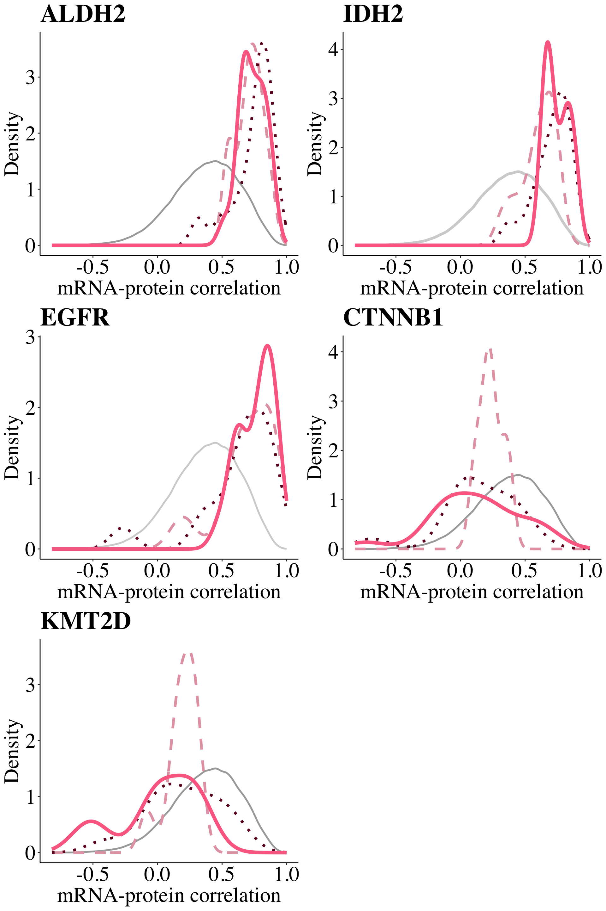
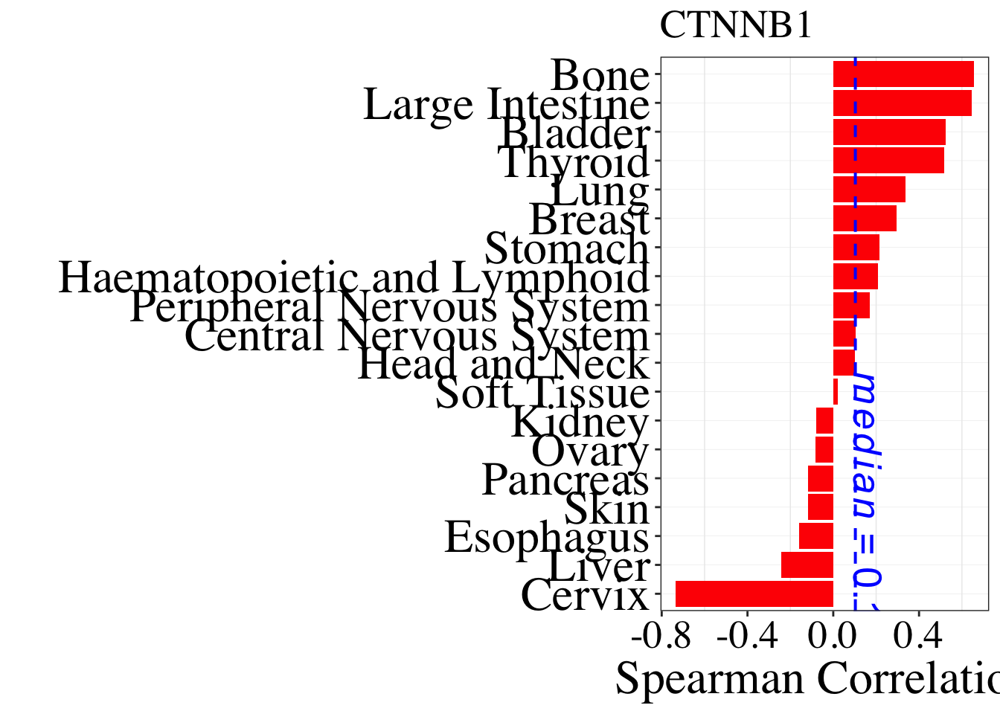
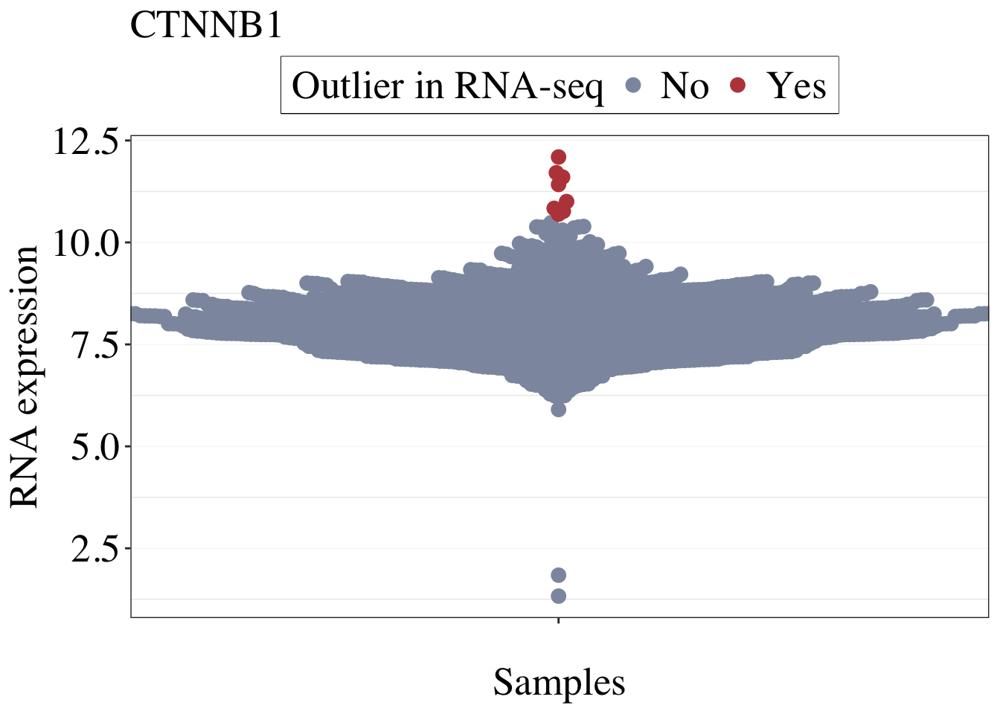
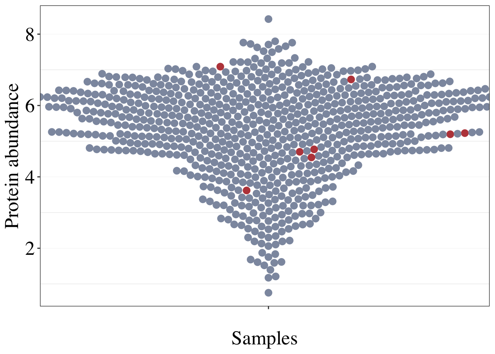

publication-figures
urwahnawaz
2024-10-08
Last updated: 2025-06-20
Checks: 7 0
Knit directory: OnCorr/
This reproducible R Markdown analysis was created with workflowr (version 1.7.1). The Checks tab describes the reproducibility checks that were applied when the results were created. The Past versions tab lists the development history.
Great! Since the R Markdown file has been committed to the Git repository, you know the exact version of the code that produced these results.
Great job! The global environment was empty. Objects defined in the global environment can affect the analysis in your R Markdown file in unknown ways. For reproduciblity it’s best to always run the code in an empty environment.
The command set.seed(20250619) was run prior to running
the code in the R Markdown file. Setting a seed ensures that any results
that rely on randomness, e.g. subsampling or permutations, are
reproducible.
Great job! Recording the operating system, R version, and package versions is critical for reproducibility.
Nice! There were no cached chunks for this analysis, so you can be confident that you successfully produced the results during this run.
Great job! Using relative paths to the files within your workflowr project makes it easier to run your code on other machines.
Great! You are using Git for version control. Tracking code development and connecting the code version to the results is critical for reproducibility.
The results in this page were generated with repository version 9809e44. See the Past versions tab to see a history of the changes made to the R Markdown and HTML files.
Note that you need to be careful to ensure that all relevant files for
the analysis have been committed to Git prior to generating the results
(you can use wflow_publish or
wflow_git_commit). workflowr only checks the R Markdown
file, but you know if there are other scripts or data files that it
depends on. Below is the status of the Git repository when the results
were generated:
Ignored files:
Ignored: .DS_Store
Ignored: .Rproj.user/
Ignored: analysis/figure/
Ignored: data/.DS_Store
Ignored: output/.DS_Store
Untracked files:
Untracked: analysis/CPTAC-data-correlations.Rmd
Untracked: analysis/supplementary-publication-figures.Rmd
Untracked: data/OncoKB/
Untracked: data/Pathways/
Untracked: data/Ranks/
Untracked: output/Other/
Untracked: output/Publication/
Untracked: output/correlations-datasets/
Unstaged changes:
Modified: analysis/_site.yml
Note that any generated files, e.g. HTML, png, CSS, etc., are not included in this status report because it is ok for generated content to have uncommitted changes.
These are the previous versions of the repository in which changes were
made to the R Markdown (analysis/publication-figures.Rmd)
and HTML (docs/publication-figures.html) files. If you’ve
configured a remote Git repository (see ?wflow_git_remote),
click on the hyperlinks in the table below to view the files as they
were in that past version.
| File | Version | Author | Date | Message |
|---|---|---|---|---|
| Rmd | 9809e44 | Urwah Nawaz | 2025-06-20 | wflow_publish("analysis/publication-figures.Rmd") |
Introduction
This notebook contains the figures that will be used for the mRNA protein correlation paper. In this instance we will be utilizing tissue specific cancer correlations.
library(ggplot2)
library(magrittr)
library(tidyverse)
library(readxl)
library(dplyr)
library(RWDataPlyr)
library(AnnotationDbi)
library(org.Hs.eg.db)
library(EnsDb.Hsapiens.v86)
library(svglite)
library(ggiraph)
library(reshape2)
library(ggvenn)
library(VennDiagram)
library(ggtext)
library(colorspace)
library(ragg)
library(msigdbr)
library(matrixStats)
library(ggpubr)file_dir = file.path("/Users/unawaz/Documents/2023/RNA-protein-correlationx/Data/")library(readxl)
read_excel_allsheets <- function(filename, tibble = FALSE) {
# I prefer straight data.frames
# but if you like tidyverse tibbles (the default with read_excel)
# then just pass tibble = TRUE
sheets <- readxl::excel_sheets(filename)
x <- lapply(sheets, function(X) readxl::read_excel(filename, sheet = X))
if(!tibble) x <- lapply(x, as.data.frame)
names(x) <- sheets
x
}sample_md = read.delim("~/Documents/2023/RNA-protein-correlationx/Data/e0022_diann_051021_sample_mapping_averaged.txt")txdf = ensembldb::transcripts(EnsDb.Hsapiens.v86, return.type="DataFrame")
genedf = ensembldb::genes(EnsDb.Hsapiens.v86, return.type="DataFrame") %>%
as.data.frame() %>%
dplyr::select(gene_name, gene_id)
tx2gene = as.data.frame(txdf[,c("tx_id","gene_id", "tx_biotype")])
tx2gene %<>%
group_by(gene_id) %>%
dplyr::count(gene_id) %>%
as.data.frame() %>%
set_colnames(c("gene_id", "tx_n")) %>%
left_join(genedf, by = "gene_id")PALETTE_TTYPE = c(
"Lung"= "#007fff",
"Prostate"= "#665d1e",
"Stomach"= "#ffbf00",
"Central Nervous System"= "#fbceb1",
"Skin"= "#ff033e",
"Bladder"= "#ab274f",
"Haematopoietic and Lymphoid"= "#d5e6f7",
"Kidney"= "#7cb9e8",
"Thyroid"= "#efdecd",
"Soft Tissue"= "#8db600",
"Head and Neck"= "#e9d66b",
"Ovary"= "#b284be",
"Bone"= "#b2beb5",
"Endometrium"= "#10b36f",
"Breast"= "#6e7f80",
"Pancreas"= "#ff7e00",
"Peripheral Nervous System"= "#87a96b",
"Cervix"= "#c9ffe5",
"Large Intestine"= "#9f2b68",
"Liver"= "#00ffff",
"Vulva"= "#008000",
"Esophagus"= "#cd9575",
"Biliary Tract"= "#72a0c1",
"Other tissue"= "#a32638",
"Small Intestine"= "#9966cc",
"Placenta"= "#f19cbb",
"Testis"= "#e32636",
"Adrenal Gland"= "#3b7a57",
"Other"= "whitesmoke")correlation_data_tissue = read.csv("output/correlations-datasets/correlation-tissue-nontransformed.csv", row.names = 1) Figure 1
Figure 1A
matrix_tissue = pivot_wider(correlation_data_tissue, names_from = Tissue, values_from = Correlation) %>%
as.data.frame() %>%
column_to_rownames("Gene")
tissue_count = sample_md %>% group_by(Tissue_type) %>% summarise(Count = n()) %>% as.data.frame() %>%
dplyr::rename(Tissue = Tissue_type)
medians_tissue = aggregate(Correlation ~ Tissue, data = correlation_data_tissue, FUN = median) %>%
as.data.frame() %>%
left_join(tissue_count, by = "Tissue") %>%
mutate(Tissue = recode(Tissue,
"Breast" = "Breast",
"Central Nervous System" = "Central Nervous\nSystem",
"Head and Neck" = "Head and\nNeck",
"Esophagus" = "Esophagus",
"Bladder" = "Bladder",
"Skin" = "Skin",
"Large Intestine" = "Large Intestine\n",
"Kidney" = "Kidney",
"Pancreas" = "Pancreas",
"Soft Tissue" = "Soft Tissue",
"Thyroid" = "Thyroid",
"Peripheral Nervous System" = "Peripheral Nervous\nSystem",
"Bone" = "Bone",
"Ovary" = "Ovary",
"Haematopoietic and Lymphoid" = "Haematopoietic and\nLymphoid",
"Stomach" = "Stomach",
"Lung" = "Lung",
"Liver" = "Liver",
"Cervix" = "Cervix")) %>%
mutate(Label = paste0(Tissue, " (n=", Count, ")")) %>%
arrange(Correlation)
tissue_dists= correlation_data_tissue %>%
left_join(tissue_count, by = "Tissue") %>%
group_by(Tissue) %>%
mutate(Label = recode(Tissue,
"Breast" = "Breast",
"Central Nervous System" = "Central Nervous\nSystem",
"Head and Neck" = "Head and\nNeck",
"Esophagus" = "Esophagus",
"Bladder" = "Bladder",
"Skin" = "Skin",
"Large Intestine" = "Large Intestine\n",
"Kidney" = "Kidney",
"Pancreas" = "Pancreas",
"Soft Tissue" = "Soft Tissue",
"Thyroid" = "Thyroid",
"Peripheral Nervous System" = "Peripheral Nervous\nSystem",
"Bone" = "Bone",
"Ovary" = "Ovary",
"Haematopoietic and Lymphoid" = "Haematopoietic and\nLymphoid",
"Stomach" = "Stomach",
"Lung" = "Lung",
"Liver" = "Liver",
"Cervix" = "Cervix")) %>%
mutate(Label = paste0(Label, " (n=", Count, ")")) %>%
mutate(Label = factor(Label, levels = medians_tissue$Label)) %>%
ggplot(aes(x = fct_rev(Label), y = Correlation)) +
ggdist::stat_halfeye(
aes(color = Tissue,
fill = after_scale(lighten(color, .5))),
adjust = .5,
width = .75,
.width = 0,
justification = -.4,
point_color = NA) + theme(legend.position = "none") +
geom_boxplot(
aes(color = Tissue,
color = after_scale(darken(color, .1, space = "HLS"))),
width = .42,
outlier.shape = NA
) +
stat_summary(
geom = "text",
fun = "median",
aes(label = round(..y.., 2),
color = Tissue,
color = after_scale(darken(color, .1, space = "HLS"))),
fontface = "bold",
size = 8,
vjust = 10.5,
na.rm = TRUE
) +
scale_color_manual(values = PALETTE_TTYPE, guide = "none") +
scale_fill_manual(values = PALETTE_TTYPE, guide = "none") +
theme_bw() +
labs(y="mRNA-protein correlation",
x= "") +
theme(axis.text.x = element_text(angle=70, hjust = 1, size =30),
axis.text.y = element_text(size =30),
axis.text = element_text(color = "black",
family="serif",
size=32),
axis.title = element_text(color = "black",
family="serif",
size=32))
tissue_distsDistribution of mRNA-protein correlations across tissues in the ProCan-DepMapSanger dataset.
# ggsave(filename = "output/Publication/Figures/Fig_1A.png", height =10, width =25, plot = tissue_dists, dpi = 1200)Figure 1B
cptac = read.csv("output/correlations-datasets/correlation-overall-cptac-linkedomics.csv", header=TRUE)
ccle = read.csv("output/correlations-datasets/CCLE-correlations-overall.csv", header=TRUE)
correlation_overall= read.csv("output/correlations-datasets/correlation-all-nontransformed.csv",
header=TRUE, row.names = 1)cptac %>%
mutate(Protein = gsub("\\.\\d+$", "", Protein)) %>%
mutate("Gene" = mapIds(org.Hs.eg.db, keys = Protein,
keytype = "ENSEMBL", column = "SYMBOL", multiVals="first")) %>%
dplyr::rename("CPTAC"= "Correlation") %>%
inner_join(correlation_overall %>%
dplyr::rename("Gene" = "Protein"), by = "Gene") %>%
with(cor(.$Correlation, .$CPTAC, method = "spearman"))[1] 0.4315774cptac %>%
mutate(Protein = gsub("\\.\\d+$", "", Protein)) %>%
mutate("Gene" = mapIds(org.Hs.eg.db, keys = Protein,
keytype = "ENSEMBL", column = "SYMBOL", multiVals="first")) %>%
dplyr::rename("CPTAC"= "Correlation") %>%
inner_join(ccle %>%
dplyr::rename("Gene" = "Protein"), by = "Gene") %>%
with(cor(.$Correlation, .$CPTAC, method = "spearman"))[1] 0.3019059ccle %>%
dplyr::rename("CCLE"= "Correlation") %>%
inner_join(correlation_overall,
by = "Protein") %>%
with(cor(.$Correlation, .$CCLE, method = "spearman"))[1] 0.3846969overall_correlations_cell_lines = correlation_overall %>%
ggplot(aes(x = Correlation)) +
geom_histogram(color="white", alpha=1, fill = "#ccd5ae") + theme_bw() +
labs(x="mRNA-protein correlation",
y = "Number of associations") + annotate("text", x = -0.1, y = 600,
label = "paste(italic(median), \" = 0.42\")", parse = TRUE, color = "#9a031e") +
geom_vline(xintercept = 0.42, linetype = "dashed", color = "#9a031e") +
ggtitle("ProCan-DepMapSanger") +
theme(legend.position = "none",
axis.text=element_text(size=15, family="serif", color = "black"),
axis.title = element_text(size=16, family = "serif", color = "black")) overall_correlations_ccle = ccle %>%
ggplot(aes(x = Correlation)) +
geom_histogram(color="white", alpha=1, fill = "#ccd5ae") + theme_bw() +
labs(x="mRNA-protein correlation",
y = "Number of associations") + annotate("text", x = -0.1, y = 700,
label = "paste(italic(median), \" = 0.46\")", parse = TRUE, color = "#9a031e") +
geom_vline(xintercept = 0.4555411, linetype = "dashed", color = "#9a031e") +
ggtitle("CCLE") +
theme(legend.position = "none",
axis.text=element_text(size=15, family="serif", color = "black"),
axis.title = element_text(size=16, family = "serif", color = "black"))
#median(cptac$Correlation,na.rm = TRUE)
overall_correlations_cptac = cptac %>%
ggplot(aes(x = Correlation)) +
geom_histogram(color="white", alpha=1, fill = "#ccd5ae") + theme_bw() +
labs(x="mRNA-protein correlation",
y = "Number of associations") + annotate("text", x = -0.2, y = 1250,
label = "paste(italic(median), \" = 0.38\")", parse = TRUE, color = "#9a031e") +
geom_vline(xintercept =0.3816182, linetype = "dashed", color = "#9a031e") +
ggtitle("CPTAC") +
theme(legend.position = "none",
axis.text=element_text(size=15, family="serif", color = "black"),
axis.title = element_text(size=16, family = "serif", color = "black"))
ggarrange(overall_correlations_cell_lines,overall_correlations_cptac,overall_correlations_ccle, ncol= 3)Histogram of mRNA-protein correlations across each cohort for ProCan-DepMapSanger, CPTAC and CCLE with medians indicated
# ggsave(filename = "output/Publication/Figures/Fig_1B.png", height =4, width =4, plot = overall_correlations_cell_lines, dpi = 1200)
#
#
# ggsave(filename = "output/Publication/Figures/Fig_1C_left.png", height =4, width =4, plot = overall_correlations_cptac, dpi = 1200)
#
# ggsave(filename = "output/Publication/Figures/Fig_1C_right.png", height =4, width =4, plot = overall_correlations_ccle, dpi = 1200)Figure 1D
Selected pathways were retrieved from Arad & Geiger (2023).
kegg_pathways = msigdbr(species="human", category = "C2", subcategory = "CP:KEGG") %>%
as.data.frame() %>%
dplyr::filter(gs_description %in% c("Cell cycle", "Oxidative phosphorylation",
"Ribosome", "Proteasome", "Spliceosome",
"Focal adhesion", "Apoptosis") )
lists = split(kegg_pathways, kegg_pathways$gs_description)
kegg_genes = lapply(lists , function(x){
x %<>% dplyr::select(Gene = gene_symbol)
})
pathway_genes = read_excel_allsheets("data/Pathways/Pathways-member-genes.xlsx")
pathway_genes = lapply(pathway_genes[1:10] , function(x){
x %<>% dplyr::select(Gene)
}
)
tissue_matrix = correlation_data_tissue %>%
pivot_wider(names_from = Tissue, values_from = Correlation) %>%
as.data.frame() %>%
dplyr::select(-Protein)
correlation_per_kegg = lapply(names(kegg_genes), function(x) {
pathways = kegg_genes[[x]]$Gene
pathway_medians = tissue_matrix %>%
dplyr::filter(Gene %in% pathways) %>%
dplyr::select(-c(Gene)) %>%
summarise_all(.funs = ~median(., na.rm = TRUE)) %>%
mutate(Pathway = x)
return(pathway_medians)
})
correlation_per_kegg %<>% do.call(rbind,.)
correlation_per_pathway = lapply(names(pathway_genes), function(x) {
pathways = pathway_genes[[x]]$Gene
pathway_medians = tissue_matrix %>%
dplyr::filter(Gene %in% pathways) %>%
dplyr::select(-c(Gene)) %>%
summarise_all(.funs = ~median(., na.rm = TRUE)) %>%
mutate(Pathway = x)
return(pathway_medians)
})plot = do.call(rbind, correlation_per_pathway) %>%
dplyr::filter(Pathway %in% c("PI3K", "NOTCH", "WNT", "RTK RAS", "TGF-Beta",
"HIPPO")) %>%
rbind(correlation_per_kegg) %>%
mutate(Pathway = ifelse(Pathway == "Oxidative phosphorylation", "OXPHOS", Pathway)) %>%
melt() %>%
mutate(Pathway = factor(Pathway, levels =
c("Ribosome", "OXPHOS",
"Proteasome", "Spliceosome", "PI3K",
"NOTCH", "Cell cycle", "Apoptosis",
"WNT", "RTK RAS", "TGF-Beta", "HIPPO",
"Focal adhesion"))) %>%
ggplot(aes(x=Pathway, y=value)) + geom_boxplot() +
theme_bw() + theme_bw() + #geom_jitter(aes(color = variable), size=4, shape = 1, stroke = 1.5) +
geom_jitter(
aes(color = variable,
#color = after_scale(darken(color, .1, space = "HLS")),
color = after_scale(desaturate(lighten(color, .25), .4))),
size=3, stroke = 1
) +
scale_color_manual(
values = PALETTE_TTYPE,
labels = c("Breast" = "Breast",
"Central Nervous System" = "Central Nervous\nSystem",
"Head and Neck" = "Head and\nNeck",
"Esophagus" = "Esophagus",
"Bladder" = "Bladder",
"Skin" = "Skin",
"Large Intestine" = "Large Intestine",
"Kidney" = "Kidney",
"Pancreas" = "Pancreas",
"Soft Tissue" = "Soft Tissue",
"Thyroid" = "Thyroid",
"Peripheral Nervous System" = "Peripheral Nervous\nSystem",
"Bone" = "Bone",
"Ovary" = "Ovary",
"Haematopoietic and Lymphoid" = "Haematopoietic\nand Lymphoid",
"Stomach" = "Stomach",
"Lung" = "Lung",
"Liver" = "Liver",
"Cervix" = "Cervix")) + # Split into 6 rows
labs(y= "Median mRNA-protein correlation",
color = "Tissue") + theme(legend.position = "top",
legend.spacing.y = unit(0, "mm"),
panel.border = element_rect(colour = "black", fill=NA),
legend.background = element_blank(),
legend.box.background = element_rect(colour = "black"),
legend.text = element_text(family = "serif", size=18),
legend.title = element_text(family = "serif", size=18)) +
theme(axis.text.x = element_text( color = "black", size =25, family = "serif", hjust = 1),
axis.text.y = element_text(color = "black", size =25, family = "serif"),
axis.title = element_text(color = "black", size =25, family = "serif"),
legend.position = "right", legend.spacing.x = unit(0.8, 'cm')) + xlab("") + coord_flip()
plot
Boxplot showing median mRNA-protein correlations by tissue in the ProCan-DepMapSanger dataset for key biological and selected cancer-related pathways
ggsave(filename = "output/Publication/Figures/Fig_1D.png", height =11, width =11, plot = plot, dpi = 1200)
# pathways_procanDepMap = do.call(rbind, correlation_per_pathway) %>%
# dplyr::filter(Pathway %in% c("PI3K", "NOTCH", "WNT", "RTK RAS", "TGF-Beta",
# "HIPPO")) %>%
# rbind(correlation_per_kegg) %>%
# mutate(Pathway = ifelse(Pathway == "Oxidative phosphorylation", "OXPHOS", Pathway)) %>%
# melt() %>%
# mutate(Pathway = factor(Pathway, levels =
# c("Ribosome", "OXPHOS",
# "Proteasome", "Spliceosome", "PI3K",
# "NOTCH", "Cell cycle", "Apoptosis",
# "WNT", "RTK RAS", "TGF-Beta", "HIPPO",
# "Focal adhesion"))) %>%
# mutate(Dataset= c("ProCan-DepMapSanger"))
#write.csv(pathways_procanDepMap, file = "output/ProCan-DepMapSanger-Pathways.csv")Fig 1E
pathways_across_datasets = read.table("output/Other/Pathways_median_all_datasets.tsv", sep = "\t", header =TRUE)
median_pathway <- pathways_across_datasets %>%
group_by(Pathway, Dataset) %>% # Group by Pathway and Dataset
summarise(Median_Correlation = median(`Median.Correlation`, na.rm = TRUE), .groups = "drop") %>%
as.data.frame() %>%
pivot_wider(names_from = Dataset, values_from = Median_Correlation) %>% as.data.frame() %>%
dplyr::rename(ProCan = `ProCan-DepMapSanger`)
library(ggpubr)
pathways_cor_1 = median_pathway %>%
ggplot(aes(x = `CPTAC`, y = ProCan)) +
geom_point(size =3) + geom_smooth(method = "lm", color = "blue", fill = "lightgray", se = TRUE) +
theme_bw() + xlab("CPTAC") +
ylab("ProCan-DepMapSanger") +
annotate("text", x = 0.22, y = 0.5, size = 5,
label = "paste(italic(r), \" = 0.85, \", italic(p), \" = 0.00034\")",
parse = TRUE, color = "black") +
theme(axis.text.x = element_text(size = 25, family = "serif", color = "black"),
axis.text.y = element_text(size = 25, family = "serif", color = "black"),
axis.title = element_text(size=25, family = "serif"),
legend.box.background = element_rect(color = "black"),
legend.text = element_text(family = "serif"),
legend.title = element_text( family = "serif"),
plot.title = element_text(family = "serif", size =20),
panel.grid.major.x = element_blank(),
panel.grid.major.y = element_line( size=.1 ),
legend.position = "top",
strip.text.y = element_text(
size = 16, face = "bold.italic", family = "serif"
),
strip.text.x = element_text(
size = 16, family = "serif"
))
#
# ggsave(filename = "output/Publication/Figures/Fig_1E_upper.png",height = 5, width = 8, plot =pathways_cor_1, dpi = 1200 )
pathways_cor_2 = median_pathway %>%
ggplot(aes(x = `CPTAC`, y = CCLE)) +
geom_point(size =3) + geom_smooth(method = "lm", color = "blue", fill = "lightgray", se = TRUE) +
theme_bw() + xlab("CPTAC") +
ylab("CCLE") +
annotate("text", x = 0.22, y = 0.57, size = 5,
label = "paste(italic(r), \" = 0.74, \", italic(p), \" = 0.0053\")",
parse = TRUE, color = "black") +
theme(axis.text.x = element_text(size = 25, family = "serif", color = "black"),
axis.text.y = element_text(size = 25, family = "serif", color = "black"),
axis.title = element_text(size=25, family = "serif"),
legend.box.background = element_rect(color = "black"),
legend.text = element_text(family = "serif"),
legend.title = element_text( family = "serif"),
plot.title = element_text(family = "serif", size =20),
panel.grid.major.x = element_blank(),
panel.grid.major.y = element_line( size=.1 ),
legend.position = "top",
strip.text.y = element_text(
size = 16, face = "bold.italic", family = "serif"
),
strip.text.x = element_text(
size = 16, family = "serif"
))
pathways_cor_2
# ggsave(filename = "output/Publication/Figures/Fig_1E_lower.png",height = 5, width = 8, plot =pathways_cor_2, dpi = 1200 )Figure 2
Figure 2A
drivers = read.delim(here::here("data/OncoKb/cancerGeneList.tsv"), fill=TRUE, check.names = FALSE)file_dir = file.path("/Users/unawaz/Documents/2023/RNA-protein-correlationx/Data/")
correlation_data_tissue = read.csv("output/correlations-datasets/correlation-tissue-nontransformed.csv", row.names = 1)
matrix_tissue = pivot_wider(correlation_data_tissue, names_from = Tissue, values_from = Correlation) %>%
as.data.frame() %>%
column_to_rownames("Gene")
driver_matrix = matrix_tissue %>%
rownames_to_column("Gene") %>%
dplyr::filter(Gene %in% drivers$`Hugo Symbol`) %>%
dplyr::select(-Protein) %>%
column_to_rownames("Gene")
tmp=rowSums(is.na(driver_matrix) )
tmp=tmp[tmp<5]
matrix_drivers=driver_matrix[names(tmp),]
matrix_drivers %<>% as.matrix()
#km = kmeans(na.omit(matrix_drivers), 10)heatmap_viz= matrix_drivers %>%
# drop_na() %>%
pheatmap::pheatmap( border_color = "white",
breaks = seq(-1,1, length.out=100),
color = colorRampPalette(c("#2F124b", "#6e74b4", "#f9f9f9",
"#fd9675", "#Ea2a5f"))(100),
na_col = "darkgrey", cutree_rows = 5, show_rownames = FALSE, fontsize_col=12)Heatmap of mRNA-protein correlations across tissue types for cancer driver genes from OncoKB
#ggsave(plot = heatmap_viz, filename = "output/Publication/Figures/Fig_2A.png",
# height = 8, width = 8, dpi = 1200)Figure 2B
matrix_tissue = pivot_wider(correlation_data_tissue, names_from = Tissue, values_from = Correlation) %>%
as.data.frame() %>%
column_to_rownames("Gene") %>%
dplyr::select(-Protein)drivers = read.delim(here::here("data/OncoKb/cancerGeneList.tsv"), fill=TRUE, check.names = FALSE)
tmp=rowSums(is.na(matrix_tissue ) )
tmp=tmp[tmp<5]
matrix_filtered=matrix_tissue[names(tmp),]
n_counts <- correlation_overall %>%
dplyr::filter(Protein %in% rownames(matrix_filtered)) %>%
mutate(Gene = ifelse(Protein %in% drivers$`Hugo Symbol`, "Cancer Driver", "Non-Driver")) %>%
ungroup() %>% # Remove any grouping
mutate(Gene = as.character(Gene)) %>% # Convert to character
group_by(Gene) %>% # Group by Gene
summarise(n = n(), .groups = "drop") %>% # Count occurrences
mutate(Label = paste0(Gene, "\n(n = ", n, ")")) # Create formatted labels
drivers_v_nondrivers <- correlation_overall %>%
dplyr::filter(Protein %in% rownames(matrix_filtered)) %>%
mutate(Gene = ifelse(Protein %in% drivers$`Hugo Symbol`, "Cancer Driver", "Non-Driver")) %>%
mutate(Gene = factor(Gene, levels = c("Non-Driver", "Cancer Driver"))) %>%
ggplot(aes(x = Gene, y = Correlation, fill = Gene)) +
# Violin plot
geom_violin(alpha = 0.6) +
# Boxplot
geom_boxplot(width = 0.2, fill = "white", outlier.shape = NA) +
# Add significance test
geom_signif(comparisons = list(c("Non-Driver", "Cancer Driver")),
map_signif_level = TRUE,
annotations = "****") +
# Custom colors
scale_fill_manual(values = c("Cancer Driver" = "#f08080", "Non-Driver" = "#adb5bd")) +
scale_x_discrete(labels = setNames(n_counts$Label, n_counts$Gene)) +
# Labels and theme
labs(y = "mRNA-protein correlation", x = "") +
theme_bw() +
theme(
axis.text.x = element_text(size = 20, family = "serif", color = "black"),
axis.text.y = element_text(size = 20, family = "serif", color = "black"),
axis.title = element_text(size = 20, family = "serif"),
legend.box.background = element_rect(color = "black"),
legend.text = element_text(family = "serif", size=15),
legend.title = element_text(family = "serif", size=15),
plot.title = element_text(family = "serif", size = 20),
panel.grid.major.x = element_blank(),
panel.grid.major.y = element_line(size = 0.1),
legend.position = "top",
strip.text.y = element_text(size = 10, face = "bold.italic", family = "serif"),
strip.text.x = element_text(size = 10, family = "serif")
)
drivers_v_nondrivers
ggsave(filename = "output/Publication/Figures/Fig_2B.png",height = 6.5, width = 6, plot =drivers_v_nondrivers, dpi = 1200 )
#
# library(ggsignif)
# library(superb)
# correlation_data_tissue %>%
# dplyr::filter(Gene %in% rownames(matrix_filtered)) %>%
# mutate(Drivers = ifelse(Gene %in% drivers$`Hugo Symbol`, "Cancer Driver", "Non-Driver")) %>% with(table(.$Drivers))
# mutate(Drivers = factor(Drivers, levels = c("Non-Driver", "Cancer Driver"))) %>%
# ggplot(aes(x=Drivers, y = Correlation)) + geom_boxplot() + ylab("") +
# showSignificance( c(1,2), 7.5, -0.05, "**")
#
# drivers= correlation_data_tissue %>%
# dplyr::filter(Gene %in% rownames(matrix_filtered)) %>%
# mutate(Drivers = ifelse(Gene %in% drivers$`Hugo Symbol`, "Cancer Driver", "Non-Driver")) %>%
# dplyr::filter(Drivers == "Cancer Driver")
#
# ndrivers= correlation_data_tissue %>%
# dplyr::filter(Gene %in% rownames(matrix_filtered)) %>%
# mutate(Drivers = ifelse(Gene %in% drivers$`Hugo Symbol`, "Cancer Driver", "Non-Driver")) %>%
# dplyr::filter(Drivers == "Non-Driver")
#
#
# t_test_result <- t.test(ndrivers$Correlation, drivers$Correlation, var.equal = TRUE)Figure 2C
matrix <- matrix_drivers[c(heatmap_viz$tree_row[["order"]]),heatmap_viz$tree_col[["order"]]]
clusters= cutree(heatmap_viz$tree_row, k=5)[heatmap_viz$tree_row[["order"]]] %>%
as.data.frame() %>%
set_colnames("Cluster")
clusters$clusters <- NA
clusters$clusters[clusters$Cluster == 5] <- 1
clusters$clusters[clusters$Cluster == 1] <- 2
clusters$clusters[clusters$Cluster == 4] <- 3
clusters$clusters[clusters$Cluster == 3] <- 4
clusters$clusters[clusters$Cluster == 2] <- 5
clusters %>%
as.data.frame() %>%
rownames_to_column("Gene") %>%
inner_join(matrix_drivers %>% melt() %>%
dplyr::rename("Gene" = "Var1", "Correlation" = "value" ), by = "Gene") %>%
group_by(Cluster) %>%
mutate(median= median(Correlation, na.rm =TRUE)) %>%
distinct("median", .keep_all = T)# A tibble: 5 × 7
# Groups: Cluster [5]
Gene Cluster clusters Var2 Correlation median `"median"`
<chr> <int> <dbl> <fct> <dbl> <dbl> <chr>
1 CREB1 5 1 Bladder -0.455 0.216 median
2 CTNNB1 1 2 Bladder 0.523 0.156 median
3 RAC2 4 3 Bladder 0.691 0.674 median
4 CTNNA1 3 4 Bladder 0.179 0.336 median
5 MET 2 5 Bladder 0.641 0.452 median clusters_drivers = clusters %>%
as.data.frame() %>%
rownames_to_column("Gene") %>%
inner_join(matrix_drivers %>% melt() %>%
dplyr::rename("Gene" = "Var1", "Correlation" = "value" ), by = "Gene") %>%
group_by(clusters) %>%
mutate(median= median(Correlation, na.rm =TRUE)) %>%
ungroup() %>%
ggplot(aes(x=Correlation)) +
geom_histogram(color="black", alpha=0.4, fill = "#6e74b4") + theme_bw() +
facet_grid(rows = vars(Cluster), scales = "free_y") + ylab("Number of Proteins") +
geom_vline(aes(xintercept = median), linetype = "dashed", color = "#9a031e", size =1) +
theme(legend.position = "top",
legend.title = element_blank(),
legend.spacing.y = unit(0, "mm"),
panel.border = element_rect(colour = "black", fill=NA),
legend.background = element_blank(),
legend.box.background = element_rect(colour = "black")) +
theme(axis.text.x = element_text( color = "black", size =16, family = "serif", hjust = 1),
axis.text.y = element_text(color = "black", size =16, family = "serif"),
axis.title = element_text(color = "black", size =16, family = "serif"),
legend.position = "top") + xlab("mRNA-protein correlation")
clusters_drivers
# ggsave(plot = clusters_drivers, filename = "output/Publication/Figures/Figure_2b_update.png",
# height = 8, width = 7, dpi = 1200)
#
cluster_full = correlation_data_tissue %>%
left_join(clusters %>%
rownames_to_column("Gene"), by = "Gene")
write.csv(cluster_full, "output/Publication/Data/clusters.csv")Gene ontologies
universe = correlation_data_tissue$Protein %>%
as.data.frame() %>%
set_colnames("Proteins") %>%
mutate("Protein_name" = gsub(";.*", "", Proteins)) %>%
mutate("Gene" = mapIds(org.Hs.eg.db, keys = Protein_name,
keytype = "UNIPROT", column = "SYMBOL", multiVals="first")) %>%
mutate("Entrez" = mapIds(org.Hs.eg.db, keys = Protein_name,
keytype = "UNIPROT", column = "ENTREZID", multiVals="first"))library(clusterProfiler)
gene_ontology = list()
for (clus in unique(clusters$clusters)) {
df = clusters %>%
dplyr::filter(clusters == clus) %>%
rownames_to_column("Gene") %>%
mutate("Entrez" = mapIds(org.Hs.eg.db, keys = Gene,
keytype = "SYMBOL", column = "ENTREZID", multiVals="first"))
ego = enrichGO(gene = df$Entrez,
universe = universe$Entrez,
OrgDb = org.Hs.eg.db,
ont = "ALL",
pAdjustMethod = "BH",
pvalueCutoff = 0.01,
qvalueCutoff = 0.05,
readable = TRUE)
gene_ontology[[paste0("cluster", clus)]] = head(ego, n=100) %>%
as.data.frame() %>%
dplyr::select( Description, "p.adjust", "qvalue", geneID, Count) %>%
mutate(Cluster = paste("Cluster", clus))
}
gene_ontology_top = lapply(gene_ontology, function(x){
ont= x %>%
arrange(qvalue) %>%
head(200)
return(ont)
})
#library(openxlsx)
#write.xlsx(gene_ontology_top, file = "output/Publication/Data/Gene-ontology-Figure2b.xlsx")# library(viridis)
# gene_ontology_top$cluster1 %>%
# ggplot(aes(y=Description, x =-log10(p.adjust),
# size = Count, color=-log10(p.adjust))) + geom_point() +
# theme_bw() + scale_color_viridis(option = "F") +
# theme(axis.text = element_text(family="serif", size=10, color = "black")) +
# labs(y="",
# title = "Cluster 1")
#
# gene_ontology_top$cluster2 %>%
# ggplot(aes(y=Description, x =-log10(p.adjust),
# size = Count, color=-log10(p.adjust))) + geom_point() +
# theme_bw() + scale_color_viridis(option = "F") +
# theme(axis.text = element_text(family="serif", size=10, color = "black")) +
# labs(y="",
# title = "Cluster 2")
#
# gene_ontology_top$cluster3 %>%
# ggplot(aes(y=Description, x =-log10(p.adjust),
# size = Count, color=-log10(p.adjust))) + geom_point() +
# theme_bw() + scale_color_viridis(option = "F") +
# theme(axis.text = element_text(family="serif", size=10, color = "black")) +
# labs(y="",
# title = "Cluster 3")cluster_full = clusters %>%
as.data.frame() %>%
rownames_to_column("Gene") %>%
inner_join(matrix_drivers %>% melt() %>%
dplyr::rename("Gene" = "Var1", "Correlation" = "value" ), by = "Gene") %>%
dplyr::select(-Cluster)
#write.csv(cluster_full, "output/Publication/Data/clusters.csv")Figure 3
Figure 3A
correlation_overall= read.csv("output/correlations-datasets/correlation-all-nontransformed.csv",
header=TRUE, row.names = 1) %>%
drop_na()
ranks = read_excel("data/Ranks/1-s2.0-S2667237522001709-mmc3.xlsx", sheet=3) %>%
as.data.frame() %>%
dplyr::rename("Gene" = "...1") %>%
mutate(Bin = case_when(
between(`Aggregated Reproducibility Rank`, 0, 0.2) ~ "0 - 0.2",
between(`Aggregated Reproducibility Rank`, 0.2, 0.4) ~ "0.2 - 0.4",
between(`Aggregated Reproducibility Rank`, 0.4, 0.6) ~ "0.4 - 0.6",
between(`Aggregated Reproducibility Rank`, 0.6, 0.8) ~ "0.6 - 0.8",
between(`Aggregated Reproducibility Rank`, 0.8, 1) ~ "0.8 - 1"
)) %>%
mutate(Bin = factor(Bin, levels = c("-1 - -0.8","-0.8 - -0.6",
"-0.6 - -0.4", "-0.4 - -0.2",
"-0.2 - 0","0 - 0.2",
"0.2 - 0.4", "0.4 - 0.6",
"0.6 - 0.8",
"0.8 - 1")))
ranks_plot = correlation_overall %>%
dplyr::rename("Gene" = "Protein") %>%
inner_join(ranks, by = "Gene") %>%
drop_na("Aggregated Reproducibility Rank") %>%
ggplot(aes(x=Bin, y = `Correlation`)) + geom_boxplot(fill="#be95c4") + theme_bw() +
labs(x="Aggregated protein reproducibility rank\n(binned)",
y="mRNA-protein correlation") +
#annotate("text", x = 1, y = 0.9, size=6,
#label = "paste(italic(r), \" = 0.48\")", parse = TRUE, color = "black") +
theme(axis.text.x = element_text( color = "black", size =12),
axis.text.y = element_text(color = "black", size =12),
axis.title = element_text(color = "black", size =15)) +
theme(
axis.text.y = element_text(size = 20, family = "serif", color = "black"),
axis.text.x = element_text(size = 20, family = "serif", color = "black"),
axis.title = element_text(size=20, family = "serif"),
legend.box.background = element_rect(color = "black"),
legend.text = element_text(family = "serif"),
legend.title = element_text( family = "serif"),
plot.title = element_text(family = "serif", size =20),
panel.grid.major.x = element_blank(),
legend.position = "top") + ggtitle("ProCan-DepMapSanger")
ranks_plot
correlation_overall %>%
dplyr::rename("Gene" = "Protein") %>%
inner_join(ranks, by = "Gene") %>%
drop_na("Aggregated Reproducibility Rank") %>%
with(cor.test(.$Correlation, .$`Aggregated Reproducibility Rank`, method = "spearman"))
Spearman's rank correlation rho
data: .$Correlation and .$`Aggregated Reproducibility Rank`
S = 7150068182, p-value < 2.2e-16
alternative hypothesis: true rho is not equal to 0
sample estimates:
rho
0.4904966 ggsave(filename = "output/Publication/Figures/Fig_3A_upper.png", height =3.5, width =7, plot = ranks_plot, dpi = 1200)library(ggpubr)
correlation_ranks = correlation_overall %>%
dplyr::rename("Gene" = "Protein") %>%
inner_join(ranks, by = "Gene") %>%
drop_na("Aggregated Reproducibility Rank") %>%
ggplot(aes(x = `Aggregated Reproducibility Rank`, y = Correlation)) +
geom_point(size =3) + geom_smooth(method = "lm", color = "blue", fill = "lightgray", se = TRUE) +
theme_bw() + ylab("mRNA-protein correlation") +
xlab("Aggregated protein reproducibility rank") +
annotate("text", x = 0.2, y = 0.85, size = 6,
label = "paste(italic(r), \" = 0.49, \", italic(p), \" < 2.2e-16\")",
parse = TRUE, color = "blue") +
theme(axis.text.x = element_text(size = 20, family = "serif", color = "black"),
axis.text.y = element_text(size = 20, family = "serif", color = "black"),
axis.title = element_text(size=20, family = "serif"),
legend.box.background = element_rect(color = "black"),
legend.text = element_text(family = "serif"),
legend.title = element_text( family = "serif"),
plot.title = element_text(family = "serif", size =20),
panel.grid.major.x = element_blank(),
panel.grid.major.y = element_line( size=.1 ),
legend.position = "top",
strip.text.y = element_text(
size = 16, face = "bold.italic", family = "serif"
),
strip.text.x = element_text(
size = 16, family = "serif"
))
correlation_ranks
ggsave(filename = "output/Publication/Figures/Fig_3A_lower.png", height =3.5, width =7, plot = correlation_ranks, dpi = 1200)Figure 3B
drivers = read.delim(here::here("data/OncoKb/cancerGeneList.tsv"), fill=TRUE, check.names = FALSE)
ranks_all_1 = correlation_overall %>%
dplyr::rename("Gene"= "Protein") %>%
inner_join(ranks, by = "Gene")library(ggpubr)
drivers_of_interest_1 = c("CTNNB1", "EGFR","IDH2","RAC2","LCP1","ALDH2", "CPS1", "KMT2D", "DPYD")
drivers_of_interest = c("CTNNB1", "EGFR","IDH2","ALDH2","KMT2D")
ranks_all_1 %<>%
mutate(Drivers = ifelse(Gene %in% drivers$`Hugo Symbol`, "Cancer Driver", "Non-Driver")) %>%
dplyr::select(-c(`Ovarian Reproducibility Rank`, `Colon Reproducibility Rank`, `CCLE Reproducibility Rank`)) %>%
dplyr::select(Gene, everything())
ranks_v_correlation = ranks_all_1 %>%
mutate(Drivers = ifelse(Gene %in% drivers$`Hugo Symbol`, "Cancer Driver", "Non-Driver"),
Gene_label = ifelse(Gene %in% drivers_of_interest, Gene, NA)) %>%
ggscatter(.,x="Correlation", y ="Aggregated Reproducibility Rank", add = "reg.line",
color = "Drivers",size = "Drivers", shape = "Drivers", add.params = list(color = "blue",
fill = "lightgray"), alpha = "Drivers", cor.method = "spearman", cor.coef.size = 5.5) +
theme_bw() + xlab("mRNA-protein correlation") +
ylab("Aggregated protein reproducibility rank") +
annotate("text", x = -0.2, y = 0.95, size = 6,
label = "paste(italic(r), \" = 0.49, \", italic(p), \" < 2.2e-16\")",
parse = TRUE, color = "blue")+
geom_vline(xintercept = 0.5, size = 0.7, lty = "dashed", color = "grey60") + theme(legend.position = "none") +
geom_hline(yintercept = 0.4 , size = 0.7, lty = "dashed", color = "grey60") +
theme(axis.text.x = element_text(size = 26, family = "serif", color = "black"),
axis.text.y = element_text(size = 26, family = "serif", color = "black"),
axis.title = element_text(size=26, family = "serif"),
legend.box.background = element_rect(color = "black"),
legend.text = element_text(family = "serif", size =22),
legend.title = element_text( family = "serif", size =22),
plot.title = element_text(family = "serif", size =23),
panel.grid.major.x = element_blank(),
panel.grid.major.y = element_line( size=.1 ),
legend.position = "top",
strip.text.y = element_text(
size = 16, face = "bold.italic", family = "serif"
),
strip.text.x = element_text(
size = 16, family = "serif"
)) + scale_shape_manual(values = c("Cancer Driver" = 17,
"CTNNB1" = 17,
"CPS1" = 17,
"KMT2D" = 17,
"MYH11" = 17,
"DPYD" = 17,
"Non-Driver" = 19)) +
scale_size_manual(values = c("Cancer Driver" = 6,
"CTNNB1" = 6,
"MYH11" = 6,
"CPS1" = 6,
"KMT2D" = 6,
"DPYD" = 6,
"Non-Driver" = 3)) +
scale_color_manual(values = c("Non-Driver" = "lightgrey",
"Cancer Driver" = "#ad2831",
"CTNNB1" = "#ad2831",
"CPS1" = "#ad2831",
"KMT2D" = "#ad2831",
"DPYD" = "#ad2831",
"MYH11" = "#ad2831")) +
theme(legend.position = "top") +
scale_alpha_manual(values = c("Non-Driver" = 0.45,
"Cancer Driver" = 1,
"CTNNB1" = 1,
"TPR" = 1,
"EGFR" = 1,
"LPP" = 1,
"MTOR" = 1,
"IDH2" = 1,
"MYH11" = 1)) +
geom_text(
data = . %>% dplyr::filter(!is.na(Gene_label)), # Filter data to only include rows with labels
aes(label = Gene_label), # Use the Gene_label column for labels
vjust = -0.3,
hjust = -0.001,
color = "black",
size = 6.5,
family = "serif",
) + labs(alpha = "Gene",
shape = "Gene",
colour = "Gene",
size = "Gene")
ranks_v_correlation
ggsave(filename = "output/Publication/Figures/Fig_3B.png", height =9, width = 10, plot = ranks_v_correlation, dpi = 1200)Figure 3C
correlation_data_tissue = read.csv("output/correlations-datasets/correlation-tissue-nontransformed.csv", row.names = 1)
ranks_all = correlation_data_tissue %>%
inner_join(ranks, by = "Gene")cr_correlations <- read.csv("output/correlations-datasets/correlation-tissue-cptac-linkedomics.csv", row.names = 1) %>%
mutate(Protein = gsub("\\.\\d+$", "", Protein)) %>%
mutate("Gene" = mapIds(org.Hs.eg.db, keys = Protein,
keytype = "ENSEMBL", column = "SYMBOL", multiVals="first"))
ccle = read.csv("output/correlations-datasets/CCLE-correlations-tissue.csv", row.names = 1)- ALDH2
ALDH2 = ranks_all %>%
ggplot(aes(Correlation)) +
geom_density(data=ranks_all, color="darkgrey", size = 1) +
geom_density(data=dplyr::filter(cr_correlations, Gene == "ALDH2"), color="#e3a3b3", size = 1.5, lty ="dashed", alpha = 0.5) +
geom_density(data=dplyr::filter(ccle, Protein == "ALDH2"), color="#6e0b24", size = 1.5, lty ="dotted", alpha =0.5) +
geom_density(data=dplyr::filter(ranks_all, Gene == "ALDH2"), color="#fb6f92", size = 2) +
theme_classic() + labs(x= "mRNA-protein correlation",
y= "Density",
title = "ALDH2") +
theme(
axis.text = element_text(color = "black", size = 25, family = "serif", face = "plain"),
axis.title = element_text(color = "black", size = 25, family = "serif", face = "plain"),
title = element_text(color = "black", size = 25, family = "serif", face = "bold")
)
ggsave(plot = ALDH2, filename = "output/Publication/Figures/ALDH2-dist.png", height = 5, width =7, dpi=1200)- IDH2
idh2 = ranks_all %>%
ggplot(aes(Correlation)) +
geom_density(data=ranks_all, color="lightgray", size = 1.5) +
geom_density(data=dplyr::filter(ccle, Protein == "IDH2"), color="#6e0b24", size = 1.5, lty ="dotted") +
geom_density(data=dplyr::filter(cr_correlations, Gene == "IDH2"), color="#e3a3b3", size = 1.5, lty ="dashed") +
geom_density(data=dplyr::filter(ranks_all, Gene == "IDH2"), color="#fb6f92", size = 2) +
theme_classic() + labs(x= "mRNA-protein correlation",
y= "Density",
title = "IDH2") +
theme(legend.position = "top",
legend.title = element_blank(),
legend.spacing.y = unit(0, "mm")) +
theme(
axis.text = element_text(color = "black", size = 25, family = "serif", face = "plain"),
axis.title = element_text(color = "black", size = 25, family = "serif", face = "plain"),
title = element_text(color = "black", size = 25, family = "serif", face = "bold")
)
ggsave(filename = "output/Publication/Figures/IDH2_distribution.png", height =5, width =7, plot = idh2, dpi = 1200)- EGFR
egfr = ranks_all %>%
ggplot(aes(Correlation)) +
geom_density(data=ranks_all, color="lightgray", size = 1) +
geom_density(data=dplyr::filter(cr_correlations, Gene == "EGFR"), color="#e3a3b3", size = 1.5, lty ="dashed") +
geom_density(data=dplyr::filter(ccle, Protein == "EGFR"), color="#6e0b24", size = 1.5, lty ="dotted") +
geom_density(data=dplyr::filter(ranks_all, Gene == "EGFR"), color="#fb6f92", size = 2) +
theme_classic() + labs(x= "mRNA-protein correlation",
y= "Density",
title = "EGFR") +
theme(legend.position = "top",
legend.title = element_blank(),
legend.spacing.y = unit(0, "mm")) +
theme(
axis.text = element_text(color = "black", size = 25, family = "serif", face = "plain"),
axis.title = element_text(color = "black", size = 25, family = "serif", face = "plain"),
title = element_text(color = "black", size = 25, family = "serif", face = "bold")
)
ggsave(filename = "output/Publication/Figures/EGFR_distribution.png", height =5, width =7, plot = egfr, dpi = 1200)- CTNNB1
ctnnb1 = ranks_all %>%
ggplot(aes(Correlation)) +
geom_density(data=ranks_all, color="darkgrey", size = 1) +
geom_density(data=dplyr::filter(cr_correlations, Gene == "CTNNB1"), color="#e3a3b3", size = 1.5, lty ="dashed", alpha = 0.5) +
geom_density(data=dplyr::filter(ccle, Protein == "CTNNB1"), color="#6e0b24", size = 1.5, lty ="dotted", alpha =0.5) +
geom_density(data=dplyr::filter(ranks_all, Gene == "CTNNB1"), color="#fb6f92", size = 2) +
theme_classic() + labs(x= "mRNA-protein correlation",
y= "Density",
title = "CTNNB1") +
theme(
axis.text = element_text(color = "black", size = 25, family = "serif", face = "plain"),
axis.title = element_text(color = "black", size = 25, family = "serif", face = "plain"),
title = element_text(color = "black", size = 25, family = "serif", face = "bold")
)
ggsave(plot = ctnnb1, filename = "output/Publication/Figures/CTNNB1-dist.png", height = 5, width =7, dpi=1200)- KMT2D
kmt2d = ranks_all %>%
ggplot(aes(Correlation)) +
geom_density(data=ranks_all, color="darkgrey", size = 1) +
geom_density(data=dplyr::filter(cr_correlations, Gene == "KMT2D"), color="#e3a3b3", size = 1.5, lty ="dashed", alpha = 0.5) +
geom_density(data=dplyr::filter(ccle, Protein == "KMT2D"), color="#6e0b24", size = 1.5, lty ="dotted", alpha =0.5) +
geom_density(data=dplyr::filter(ranks_all, Gene == "KMT2D"), color="#fb6f92", size = 2) +
theme_classic() + labs(x= "mRNA-protein correlation",
y= "Density",
title = "KMT2D") +
theme(
axis.text = element_text(color = "black", size = 25, family = "serif", face = "plain"),
axis.title = element_text(color = "black", size = 25, family = "serif", face = "plain"),
title = element_text(color = "black", size = 25, family = "serif", face = "bold")
)
ggsave(plot = kmt2d, filename = "output/Publication/Figures/KMT2D-dist.png", height = 5, width =7, dpi=1200)ggarrange(ALDH2,idh2 ,
egfr, ctnnb1,
kmt2d, ncol = 2, nrow = 3)
#ggsave(filename = "output/Publication/Figures/Figure_3c.png", height =8, width =8, dpi = 1200)Figure 3D
correlation_data_tissue = read.csv("output/correlations-datasets/correlation-tissue-nontransformed.csv", row.names = 1)
ctnn1_tissues = correlation_data_tissue %>%
dplyr::filter(Gene == "CTNNB1") %>%
ggplot(aes(x= reorder(Tissue, Correlation), y = Correlation)) + geom_bar(stat= "identity", fill= "red") + geom_hline(yintercept = 0.103 , size = 0.7, lty = "dashed", color = "blue") +
coord_flip() +
theme_bw() + ggtitle("CTNNB1") + theme(axis.text.x = element_text(size = 20, family = "serif", color = "black"),
axis.text.y = element_text(size = 24, family = "serif", color = "black"),
axis.title = element_text(size=24, family = "serif"),
legend.box.background = element_rect(color = "black"),
legend.text = element_text(family = "serif"),
legend.title = element_text( family = "serif"),
plot.title = element_text(family = "serif", size =20),
panel.grid.major.x = element_blank(),
panel.grid.major.y = element_line( size=.1 ),
legend.position = "none",
strip.text.y = element_text(
size = 10, face = "bold.italic", family = "serif"
),
strip.text.x = element_text(
size = 10, family = "serif"
)) + labs(x= "", y="Spearman Correlation") +
annotate("text", x = 4, y = 0.16,
label = "paste(italic(median), \" = 0.10\")", parse = TRUE, color = "blue", size = 7, angle = 270)
ctnn1_tissues
#ggsave(filename = "output/Publication/Figures/Fig_3F.png",height = 10, width = , plot =ctnn1_tissues, dpi = 1200)Figure 3D
file_dir = file.path("/Users/unawaz/Documents/2023/RNA-protein-correlationx/Data/")
data = list()
## Metadata
data$sample_md = read.delim("~/Documents/2023/RNA-protein-correlationx/Data/e0022_diann_051021_sample_mapping_averaged.txt")
data$sample_md_rep = read.table(file.path(file_dir, "e0022_diann_051021_sample_mapping_replicates.txt"), header=TRUE, sep = "\t")
data$prt_mtx = read.delim(file.path(file_dir, "e0022_diann_051021_working_matrix_averaged.txt"),
header = TRUE, fill = TRUE, check.names = FALSE)
data$rna_mtx = read.delim(gzfile(file.path(file_dir, "rnaseq_voom.csv.gz")), header = TRUE,
fill = TRUE, sep = ",",
row.names = 1, check.names = FALSE)library(ggbeeswarm)
rna_swarm_ctnnb1 =data$rna_mtx %>%
t() %>%
as.data.frame() %>%
dplyr::select("CTNNB1") %>%
scale() %>%
as.data.frame() %>%
mutate(Outlier = ifelse(CTNNB1 > 3, "Yes", "No")) %>%
rownames_to_column("SIDM") %>%
left_join(data$rna_mtx %>%
t() %>%
as.data.frame() %>%
dplyr::select("RNA" = "CTNNB1") %>%
rownames_to_column("SIDM"), by = "SIDM") %>%
ggplot(aes(y = RNA, x='', color = Outlier)) +
geom_beeswarm(cex=3, size=3) +
scale_color_manual(values = c("No" = "#8d99ae",
"Yes" = "#bc4749")) +
theme(legend.position = "top") + theme_bw() +
theme(axis.text.x = element_text(size = 20, family = "serif", color = "black"),
axis.text.y = element_text(size = 20, family = "serif", color = "black"),
axis.title = element_text(size=20, family = "serif"),
legend.box.background = element_rect(color = "black"),
legend.text = element_text(family = "serif", size=20),
legend.title = element_text( family = "serif", size =20),
plot.title = element_text(family = "serif", size =20),
panel.grid.major.x = element_blank(),
panel.grid.major.y = element_line( size=.1 ),
legend.position = "top",
strip.text.y = element_text(
size = 10, face = "bold.italic", family = "serif"
),
strip.text.x = element_text(
size = 10, family = "serif"
)) + ggtitle("CTNNB1") + xlab("Samples") + ylab("RNA expression") + labs(color = "Outlier in RNA-seq")
rna_swarm_ctnnb1
ggsave(filename = "output/Publication/Figures/Fig_3E_RNA.png",height = 6, width = 5, plot = rna_swarm_ctnnb1, dpi = 1200 )Figure 3E
ctnnb1= data$rna_mtx %>%
t() %>%
as.data.frame() %>%
dplyr::select("CTNNB1") %>%
scale() %>%
as.data.frame() %>%
mutate(Outlier = ifelse(abs(CTNNB1) > 3, "Yes", "No")) %>%
rownames_to_column("SIDM") %>%
left_join(data$rna_mtx %>%
t() %>%
as.data.frame() %>%
dplyr::select("RNA" = "CTNNB1") %>%
rownames_to_column("SIDM"), by = "SIDM") %>%
left_join(data$prt_mtx %>%
mutate(Project_Identifier = gsub(";.*", "", Project_Identifier)) %>%
column_to_rownames("Project_Identifier") %>%
t() %>%
as.data.frame() %>%
rownames_to_column("Protein") %>%
mutate("Protein_name" = gsub(";.*", "", Protein)) %>%
mutate("Gene" = mapIds(org.Hs.eg.db, keys = Protein_name,
keytype = "UNIPROT", column = "SYMBOL", multiVals="first")) %>%
dplyr::select(-c(Protein_name, Protein)) %>%
dplyr::filter(Gene == "CTNNB1") %>%
column_to_rownames("Gene") %>%
melt() %>% set_colnames(c("SIDM", "Protein"))) %>%
ggplot(aes(x=RNA, y =Protein, color = Outlier)) + geom_point(size = 4) + theme_bw() + xlim(6,13) +
scale_color_manual(values = c("No" = "#8d99ae",
"Yes" = "#bc4749")) +
theme(axis.text.x = element_text(size = 20, family = "serif", color = "black"),
axis.text.y = element_text(size = 20, family = "serif", color = "black"),
axis.title = element_text(size=20, family = "serif"),
legend.box.background = element_rect(color = "black"),
legend.text = element_text(family = "serif"),
legend.title = element_text( family = "serif"),
plot.title = element_text(family = "serif", size =20),
panel.grid.major.x = element_blank(),
panel.grid.major.y = element_line( size=.1 ),
legend.position = "none",
strip.text.y = element_text(
size = 10, face = "bold.italic", family = "serif"
),
strip.text.x = element_text(
size = 10, family = "serif"
)) + ggtitle("CTNNB1") + labs(x="RNA expression", y = "Protein abundance")
ctnnb1
ggsave(filename = "output/Publication/Figures/Fig_3E_upper.png",height = 5.5, width = 5, plot = ctnnb1, dpi = 1200 )
protein_swarm = data$rna_mtx %>%
t() %>%
as.data.frame() %>%
dplyr::select("CTNNB1") %>%
scale() %>%
as.data.frame() %>%
mutate(Outlier = ifelse(abs(CTNNB1) > 3, "Yes", "No")) %>%
rownames_to_column("SIDM") %>%
left_join(data$rna_mtx %>%
t() %>%
as.data.frame() %>%
dplyr::select("RNA" = "CTNNB1") %>%
rownames_to_column("SIDM"), by = "SIDM") %>%
left_join(data$prt_mtx %>%
mutate(Project_Identifier = gsub(";.*", "", Project_Identifier)) %>%
column_to_rownames("Project_Identifier") %>%
t() %>%
as.data.frame() %>%
rownames_to_column("Protein") %>%
mutate("Protein_name" = gsub(";.*", "", Protein)) %>%
mutate("Gene" = mapIds(org.Hs.eg.db, keys = Protein_name,
keytype = "UNIPROT", column = "SYMBOL", multiVals="first")) %>%
dplyr::select(-c(Protein_name, Protein)) %>%
dplyr::filter(Gene == "CTNNB1") %>%
column_to_rownames("Gene") %>%
melt() %>% set_colnames(c("SIDM", "Protein"))) %>%
ggplot(aes(y = Protein, x='', color = Outlier)) +
geom_beeswarm(size = 3, cex=3) +
scale_color_manual(values = c("No" = "#8d99ae",
"Yes" = "#bc4749")) + theme_bw() +
theme(axis.text.x = element_text(size = 20, family = "serif", color = "black"),
axis.text.y = element_text(size = 20, family = "serif", color = "black"),
axis.title = element_text(size=20, family = "serif"),
legend.box.background = element_rect(color = "black"),
legend.text = element_text(family = "serif"),
legend.title = element_text( family = "serif"),
plot.title = element_text(family = "serif", size =20),
panel.grid.major.x = element_blank(),
panel.grid.major.y = element_line( size=.1 ),
legend.position = "none",
strip.text.y = element_text(
size = 10, face = "bold.italic", family = "serif"
),
strip.text.x = element_text(
size = 10, family = "serif"
)) + ylab("Protein abundance") + xlab("Samples")
protein_swarm
ggsave(filename = "output/Publication/Figures/Fig_3E_lower.png",height = 5.5, width = 5, plot =protein_swarm, dpi = 1200 )
sessionInfo()R version 4.3.3 (2024-02-29)
Platform: aarch64-apple-darwin20 (64-bit)
Running under: macOS Sonoma 14.7.5
Matrix products: default
BLAS: /Library/Frameworks/R.framework/Versions/4.3-arm64/Resources/lib/libRblas.0.dylib
LAPACK: /Library/Frameworks/R.framework/Versions/4.3-arm64/Resources/lib/libRlapack.dylib; LAPACK version 3.11.0
locale:
[1] en_US.UTF-8/en_US.UTF-8/en_US.UTF-8/C/en_US.UTF-8/en_US.UTF-8
time zone: Australia/Sydney
tzcode source: internal
attached base packages:
[1] grid stats4 stats graphics grDevices utils datasets
[8] methods base
other attached packages:
[1] ggbeeswarm_0.7.2 clusterProfiler_4.10.1
[3] ggpubr_0.6.0 matrixStats_1.5.0
[5] msigdbr_7.5.1 ragg_1.3.3
[7] colorspace_2.1-1 ggtext_0.1.2
[9] VennDiagram_1.7.3 futile.logger_1.4.3
[11] ggvenn_0.1.10 reshape2_1.4.4
[13] ggiraph_0.8.12 svglite_2.1.3
[15] EnsDb.Hsapiens.v86_2.99.0 ensembldb_2.26.0
[17] AnnotationFilter_1.26.0 GenomicFeatures_1.54.4
[19] GenomicRanges_1.54.1 GenomeInfoDb_1.38.8
[21] org.Hs.eg.db_3.18.0 AnnotationDbi_1.64.1
[23] IRanges_2.36.0 S4Vectors_0.40.2
[25] Biobase_2.62.0 BiocGenerics_0.48.1
[27] RWDataPlyr_0.6.4 readxl_1.4.3
[29] lubridate_1.9.4 forcats_1.0.0
[31] stringr_1.5.1 dplyr_1.1.4
[33] purrr_1.0.2 readr_2.1.5
[35] tidyr_1.3.1 tibble_3.2.1
[37] tidyverse_2.0.0 magrittr_2.0.3
[39] ggplot2_3.5.1 workflowr_1.7.1
loaded via a namespace (and not attached):
[1] fs_1.6.5 ProtGenerics_1.34.0
[3] bitops_1.0-9 enrichplot_1.22.0
[5] HDO.db_0.99.1 httr_1.4.7
[7] RColorBrewer_1.1-3 tools_4.3.3
[9] backports_1.5.0 utf8_1.2.4
[11] R6_2.5.1 lazyeval_0.2.2
[13] mgcv_1.9-1 ggdist_3.3.2
[15] withr_3.0.2 prettyunits_1.2.0
[17] gridExtra_2.3 cli_3.6.3
[19] textshaping_0.4.1 formatR_1.14
[21] scatterpie_0.2.4 labeling_0.4.3
[23] sass_0.4.9 Rsamtools_2.18.0
[25] systemfonts_1.1.0 yulab.utils_0.1.9
[27] gson_0.1.0 DOSE_3.28.2
[29] rstudioapi_0.17.1 RSQLite_2.3.9
[31] generics_0.1.3 gridGraphics_0.5-1
[33] BiocIO_1.12.0 car_3.1-3
[35] distributional_0.5.0 GO.db_3.18.0
[37] Matrix_1.6-5 abind_1.4-8
[39] lifecycle_1.0.4 whisker_0.4.1
[41] yaml_2.3.10 carData_3.0-5
[43] SummarizedExperiment_1.32.0 qvalue_2.34.0
[45] SparseArray_1.2.4 BiocFileCache_2.10.2
[47] blob_1.2.4 promises_1.3.2
[49] crayon_1.5.3 lattice_0.22-5
[51] cowplot_1.1.3 KEGGREST_1.42.0
[53] pillar_1.10.1 knitr_1.49
[55] fgsea_1.28.0 rjson_0.2.23
[57] codetools_0.2-19 fastmatch_1.1-6
[59] glue_1.8.0 getPass_0.2-4
[61] ggfun_0.1.8 data.table_1.16.4
[63] treeio_1.26.0 vctrs_0.6.5
[65] png_0.1-8 cellranger_1.1.0
[67] gtable_0.3.6 cachem_1.1.0
[69] xfun_0.50 S4Arrays_1.2.1
[71] tidygraph_1.3.1 pheatmap_1.0.12
[73] nlme_3.1-164 ggtree_3.10.1
[75] bit64_4.5.2 progress_1.2.3
[77] filelock_1.0.3 rprojroot_2.0.4
[79] bslib_0.8.0 vipor_0.4.7
[81] DBI_1.2.3 tidyselect_1.2.1
[83] processx_3.8.5 bit_4.5.0.1
[85] compiler_4.3.3 curl_6.1.0
[87] git2r_0.35.0 xml2_1.3.6
[89] DelayedArray_0.28.0 shadowtext_0.1.4
[91] rtracklayer_1.62.0 scales_1.3.0
[93] callr_3.7.6 rappdirs_0.3.3
[95] digest_0.6.37 rmarkdown_2.29
[97] XVector_0.42.0 htmltools_0.5.8.1
[99] pkgconfig_2.0.3 MatrixGenerics_1.14.0
[101] dbplyr_2.5.0 fastmap_1.2.0
[103] rlang_1.1.4 htmlwidgets_1.6.4
[105] farver_2.1.2 jquerylib_0.1.4
[107] jsonlite_1.8.9 BiocParallel_1.36.0
[109] GOSemSim_2.28.1 RCurl_1.98-1.16
[111] Formula_1.2-5 GenomeInfoDbData_1.2.11
[113] ggplotify_0.1.2 patchwork_1.3.0
[115] munsell_0.5.1 Rcpp_1.0.14
[117] ape_5.8-1 babelgene_22.9
[119] viridis_0.6.5 stringi_1.8.4
[121] ggraph_2.2.1 zlibbioc_1.48.2
[123] MASS_7.3-60.0.1 plyr_1.8.9
[125] parallel_4.3.3 ggrepel_0.9.6
[127] Biostrings_2.70.3 graphlayouts_1.2.1
[129] splines_4.3.3 gridtext_0.1.5
[131] hms_1.1.3 ps_1.8.1
[133] igraph_2.1.2 uuid_1.2-1
[135] ggsignif_0.6.4 biomaRt_2.58.2
[137] futile.options_1.0.1 XML_3.99-0.18
[139] evaluate_1.0.3 lambda.r_1.2.4
[141] tzdb_0.4.0 tweenr_2.0.3
[143] httpuv_1.6.15 polyclip_1.10-7
[145] ggforce_0.4.2 broom_1.0.7
[147] restfulr_0.0.15 tidytree_0.4.6
[149] rstatix_0.7.2 later_1.4.1
[151] viridisLite_0.4.2 aplot_0.2.4
[153] beeswarm_0.4.0 memoise_2.0.1
[155] GenomicAlignments_1.38.2 timechange_0.3.0
[157] here_1.0.1